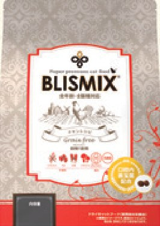
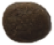

ブリスミックス グレインフリー キャット チキン

全年齢猫用チキンレシピ
- ●GRAIN FREE
| 内容量 | 価格（税込） |
|---|---|
| 400g | ¥1,496 |
| 800g | ¥2,640 |
| 2kg | ¥5,940 |
| 4kg | ¥10,483 |
原産国名：カナダ

保証成分・代謝カロリー
保証成分
| 粗タンパク質 | 43.0%以上 |
|---|---|
| 粗脂肪 | 20.0%以上 |
| 粗繊維 | 3.5%以下 |
| 粗灰分 | 9.5%以下 |
| 水分 | 10.0%以下 |
| オメガ6脂肪酸 | 3.5%以上 |
| オメガ3脂肪酸 | 1.25%以上 |
その他含有成分
| グルコサミン | 300mg/kg以上 |
|---|---|
| コンドロイチン | 100mg/kg以上 |
| タウリン | 0.31%以上 |
代謝カロリー 3,810kcal/kg
原材料名
フレッシュチキン・ドライチキン・スィートポテト・えんどう豆・カノラオイル（混合トコフェロールによる保存処理）・ドライオーシャンフィッシュ・ヒラマメ・サーモンオイル（混合トコフェロールによる保存処理）・乾燥卵・チキンレバー・乾燥ケルプ・プロピオン酸カルシウム・塩化コリン・硫酸水素ナトリウム・DLメチオニン・グルコサミン塩酸塩・ユッカシジゲラエキス・コンドロイチン硫酸・人参・パンプキン・ブロッコリー・リンゴ・ブルーベリー・チコリ根・クランベリー・ジンジャー・ペパーミント・カモミール・ターメリック・セロリシード・ドライローズマリー・ほうれん草・タイム・パセリ・バチルスリケニフォルミス・バチルスサブティリス・タウリン・アガリクス・ストレプトコッカス サリバリウス（口腔内善玉菌）・HJ1乳酸菌・クエン酸・硫酸亜鉛・硫酸鉄・ビタミンE・ナイアシン・硫酸銅・Lリジン塩酸塩・亜セレン酸ナトリウム・チアミン硝酸塩・硫酸マンガン・ヨウ化カルシウム・パントテン酸カルシウム・ビタミンA・ビタミンB12・リボフラビン・ピリドキシン塩酸塩・ビオチン・炭酸コバルト・葉酸・ビタミンD3